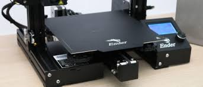

Courtenay's Assignment 3!

For this project, I set out to explore 3D printing. Another classmate and I bought an Ender 3 Pro 3D printer from Creality, which required about 3 hours of assembly time in total. We bumped into a couple of challenges during assembly, primarily due to not tightening a couple of screws quite enough at first and some trial and error with bed leveling. Below are a couple of pictures showing the assembly and bed leveling process:

As a next step, I watched a tutorial given by my professor, Nadya Peek, on how to prepare various Rhino models for export to STL format, slice them in Cura, and then feed the sliced files to the 3D printer. I took about one hour to install Cura (the slicer) and create all of the test models I would be 3D printing, which included the following: 4 cubes, 2 tubes, 4 cylinders, and a nested object. Below is a screen capture showing a 2 cm cube just before slicing it in Cura:
Rhino 7 file of 2 cm cube to be printed at low quality setting
STL file (exported from Rhino for slicing in Cura as a next step)
Although I completed assembly of the Ender Pro 3, I ended up doing my actual 3D print testing on a Prusa 3D printer in the university makerspace. With some support from the makerspace staff, I was able to load the filament and then print my first 2 cm cube in 13 minutes!

Here is a close-up of my first 3D printed cube measuring 2 cm - it came out nice and clean:


Grasshopper file (a snaphoot in time!)
Rhino 7 file (my learning in progress!)
After finishing the tutorial, I documented a couple more shots of my final Grasshopper definition and Rhino model:


I went to the makerspace to laser cut my parametric shape and do some testing. Before cutting, I measured the depth of my cardboard, which measured 3.5 mm. Next, I had to convert my Rhino file (.3dm) to Adobe Illustrator (.ai), reduce the stroke weight to .01 pt, and change the color to RGB (255, 0, 0) so that the laser printer would recognize it.
When testing the fit of my first pair of laser cut parts, I found the clipping together to be a bit clunky. The laser power setting appeared to be set too low because the edges of the first two cardboard prototypes were a bit ragged.